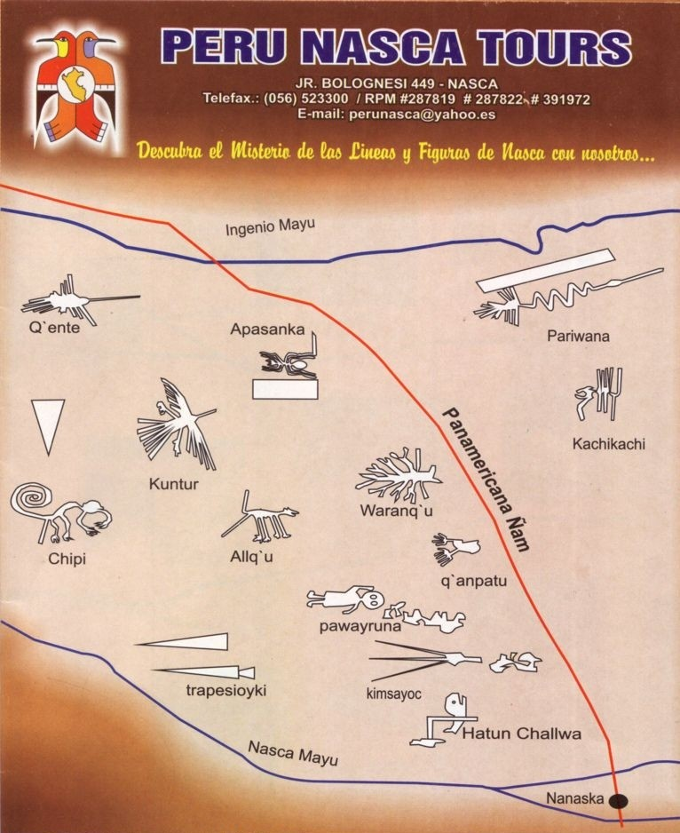
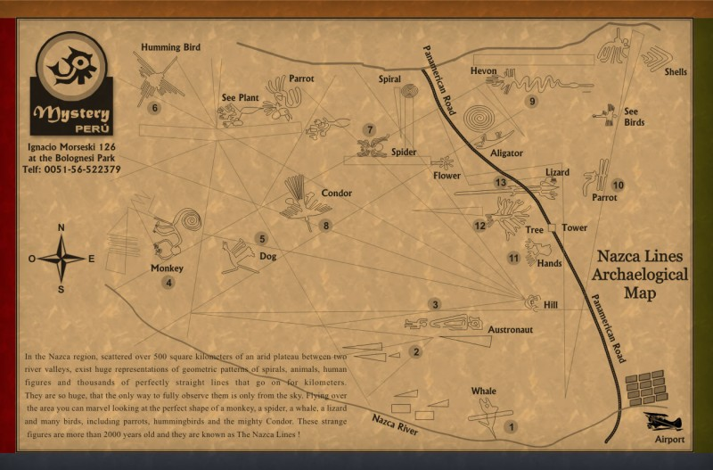
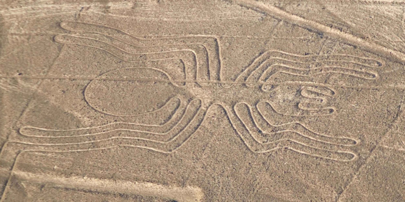
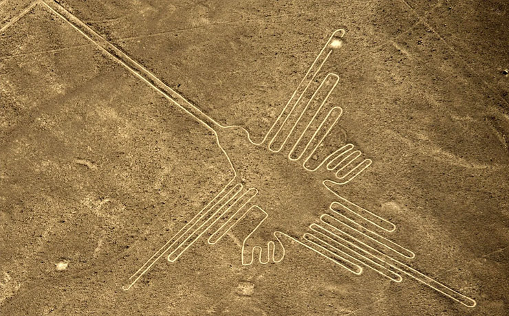

나즈카 지상화
페루의 수도 리마에서 남쪽으로 400km 떨어진 나스카 일대의 땅에 그려져 있는 거대한 그림들로 거미, 고래, 원숭이, 벌새, 거인 등의 그림이 30개 이상, 소용돌이, 직선, 삼각형과 같은 곡선이나 기하학 무늬들이 140개 이상 그려져 있다.


각각의 그림은 최대 300m의 크기로 매우 거대하기 때문에 오직 하늘에서만 완전한 그림을 볼 수 있다. 기원전 300년경에 그려졌다고는 믿을 수 없을 정도의 크기와 정교함 덕분에 오랫동안 초고대문명설의 근거로 주장해 왔다. 1939년, 페루 남부지역을 운행하던 비행기 파일럿에 의해 최초로 발견되었는데 그 이유인 즉, 워낙 큰 규모의 그림인 탓에 지상에서는 땅을 파낸 선 이외에는 보이지 않았기 때문. 그림의 전모를 파악하는 것은 오직 하늘에서만 가능했다. 1948년 미국 롱아일랜드 대학의 농업경제학자인 폴 코소크(Paul Kosok) 교수가 처음 연구를 시작하였으며, 그 뒤를 이어 전직 초등교사로서 코소크의 조수 역할을 한 독일인 마리아 라이헤(Maria Reiche)가 홀로 연구를 계속하여 큰 성과를 내게 된다.

